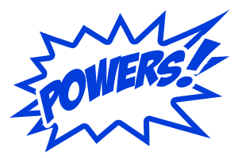
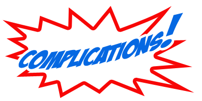

SECRET ORIGINS

You build a hero using a "budget" of Character Points. There are also certain limits and
guidelines imposed by the game's power level, chosen by the Gamemaster, but within those limits you can build a
wide range of characters.
The quickest and easiest way to create your own hero is to look through the various hero
archetypes, choose one that fits the type of hero you want to play, and customize it to match your ideas. With just
a few quick choices, you have a new hero, complete and ready for the game!
Each archetype offers a complete, ready-to-play power level 10 hero, the recommended starting
power level. Some archetypes offer a few simple choices in terms of skills, advantages, or sets of powers to fit
different themes. For example, many archetypes offer a choice of an Expertise skill to round out the character's
background and interests outside of superheroism.
Some archetypes also offer an Options section, where you can change some of the
preexisting trait choices to create a different kind of hero. For example, the Crime Fighter archetype has options for a
hero with less equipment, but super-human senses, or a special vehicle of some type. Other archetypes offer similar
options.
Even if the archetype does not have an Options section that does not mean you cannot
customize the archetype to suit the type of hero you want to play! The archetypes are just starting points: if you are
more familiar with character design feel free to change any or all of your chosen archetype's traits. So long as you
stay within the bounds of available Character points, series power level, and your Gamemaster's approval, you're
fine.
HERO DESIGN
Designing a hero from scratch follows a series of simple steps. You'll need a copy of the
character sheet found in the back of the book (and also available online) and some scratch paper to design your
character.
1. HERO CONCEPT

Before you get started, consider what sort of hero you want to create. What are the hero's
basic abilities? What are the hero's powers? What's the hero's origin? You may want to take a look at the
Archetypes for some ideas of the different types of heroes you can create. You also can draw inspiration from
your favorite characters from comic books, television, or movies. Take a look through Advantages and see if any
of the powers there inspire a character idea. You may want to jot down a few notes about the sort of hero you'd prefer
to play, which will help guide you through the rest of the character design process.
2. GAMEMASTER GUIDELINES
Your GM may have particular guidelines for characters in the game, such as not allowing certain
powers or concepts or requiring particular descriptors. If there are no aliens in the setting, for example, then you
obviously can't play an alien hero. Likewise, if your Gamemaster bans mental powers from the series, then a psychic
isn't appropriate. Run your hero concept by your Gamemaster before you start working on it! You might also want to
consult with your fellow players so you can design your characters together and ensure they'll make a good team.
3. POWER LEVEL
Your GM sets the starting power level for the series. Generally, this is level 10, but it may
range anywhere from level 5 to level 20 or more. The power level determines the player characters' starting Character
points and exactly where you can spend them.
See Power Level for details. If the power level is at least 20 also see Transcendence in the Gamemaster section.
4. ABILITIES
Choose the ability ranks you want your character to have and pay 2 Character points for each
rank. Choose defense bonuses for your character, paying 1 Character points per +1 defense over the base rank provided by
your hero's abilities. To improve your hero's Toughness, see Advantages and Power.
See Abilities for details.
5. SKILLS
Choose the skill ranks you want your character to have and pay 1 Character point per 2 total skill
ranks.
See Skills for details.
6. ADVANTAGES
Choose the advantages you want your character to have and pay 1 Character point per advantage
or rank in an advantage.
See Advantages for details.
7. POWERS
Create your hero's powers by choosing their desired effects and paying the effects' base cost,
adjusted for any modifiers, and multiplied by the number of ranks.
See Powers for details.
8. COMPLICATIONS
Choose at least two complications for your hero. You can have more, if you want, and the more
complications your hero faces, the greater your chances for earning victory points during the game.
See Complications for details.
9. DETAILS
Go through the limits listed under Power Level and make sure your hero's traits all fit
within them. If not, adjust the traits accordingly until they do.
Go back through and add up the costs of your hero's abilities, defenses, skills, advantages,
and powers. You should end up with a figure equal to the starting Character points shown on Table: Starting
Character Points. If not, double-check your math and either remove or add traits to your character to reach the
starting Character point total. You are not required to spend all of your character (or equipment) points.
Figure out things like your hero's name, appearance, origin, background, and motivation. If you
can, consider creating a sketch or detailed description of your hero's costume.
10. GAMEMASTER APPROVAL
Show your new hero to the Gamemaster for approval. The GM should check again to make sure your
Character points are spent and added up correctly, your hero follows the power level guidelines and any other guidelines
set for the series, and that the character is generally complete and suited to the overall game. Once your GM has
approved, your new hero is ready for play!
CHARACTER POINTS
You design a hero by spending Character Points on various traits. Each ability, skill,
advantage, power, and other trait has an associated Character point cost.
STARTING CHARACTER POINTS
The game's power level provides a guideline for how many Character points you get initially to
design your character, as shown on the Starting Character points table. The Gamemaster can vary the starting
Character points as desired to suit the series.
SPENDING CHARACTER POINTS
Each trait costs a certain number of Character points. You "spend" or allocate your points to
give your character different traits. Once spent, Character points cannot be reallocated without the use of a particular
power or the Gamemaster's permission. The basic costs of traits are given on the Basic Trait Costs table, with
specific costs for powers given in Powers.
POWER LEVEL
Power Levels
Heroes cover a diverse range of power levels, from the first costumed adventurers of the Golden
Age, who relied solely on their skills and a few gimmicks (and modern vigilantes of the mean streets, who do much the
same), to the greatest protectors of the world, who take on cosmic threats on a regular basis. The following are some
common power levels and starting Character point values suitable for different games:
POWER LEVEL 8 - MASKED ADVENTURERS
This power level fits the "Mystery Men" era of the Golden Age of comic books, as well as for
teams of mostly non-powered adventurers: heroes who rely more on their skills and wits (and maybe a few gadgets) rather
than amazing powers. The suggested starting value of 120 Character points creates well-rounded heroes at this level,
particularly if the emphasis is on skills and advantages--and maybe a power or two--rather than a lot of powers. A
higher starting Character point total allows for more diverse capabilities within the same limits.
Heroes at this level often focus more on skill than sheer damage output, often having fighting
skills in the 10-12 range, but commensurately lower damage and effect ranks (using just their fists or small
arms).
POWER LEVEL 10 - SUPER HEROES
The suggested starting power level suits mature and experienced "adventurers" of the previous
level along with a wide range of younger or focused superhumans.
Power level 10 heroes may have a balance of attack and effect, defense and resistance, or may
go for being stronger on one side than the other, having great combat skill, but comparatively limited damage, for
example, or great Toughness, but lowered defenses.
POWER LEVEL 12 - BIG LEAGUES
Power level 12 is where you find many of the more experienced and powerful heroes. They are
"senior" heroes, usually with considerable capabilities (and, often, experience). Those lacking superhuman powers have
amazing levels of skill and resources to draw upon while the superhuman types are often among the most capable in their
particular area, often worthy of titles like "King" and "World's Greatest".
In areas where power level 12 heroes tip the balance of their combat capabilities, they can
have amazing ranks in attack or defense.
POWER LEVEL 14 - WORLD-PROTECTORS
Heroes at this level are among the most powerful beings of the universe. They are largely
capable of ignoring lesser concerns and tend to focus on "big picture" problems like alien invasions and
world-conquerors along with natural disasters (although they may still handle some of the "small stuff" as well).
Power level is an overall measure of effectiveness and power, primarily combat ability,
but also generally what sort of tasks a character can be expected to accomplish on a routine basis (see Routine
Checks in The Basics).
TABLE: STARTING CHARACTER POINTS
| POWER LEVEL | STARTING CHARACTER POINTS |
|---|---|
| 1 | 15 |
| 2 | 30 |
| 3 | 45 |
| 4 | 60 |
| 5 | 75 |
| 6 | 90 |
| 7 | 105 |
| 8 | 120 |
| 9 | 135 |
| 10 | 150 |
| 11 | 165 |
| 12 | 180 |
| 13 | 195 |
| 14 | 210 |
| 15 | 225 |
| 16 | 240 |
| 17 | 255 |
| 18 | 270 |
| 19 | 285 |
| 20 | 300 |
TABLE: BASIC TRAIT COSTS
| TRAIT | COST IN CHARACTER POINTS |
|---|---|
| Ability | 2 per ability rank |
| Defense | 1 per defense rank |
| Skill | 1 per 2 skill ranks |
| Advantage | 1 per advantage or advantage rank |
| Power | ((base effect cost + extras - flaws) x rank) + flat modifiers |
Power level is a value set by the Gamemaster for the players. It places certain
limits on where and how players can spend Character points when creating or improving their heroes. Advantages and all
modifiers (including circumstance) are included when determining power level limitations (unless specifically otherwise
noted). Power level imposes the following limits:
Skill Modifier: Your hero's total modifier with any skill (ability rank +
skill rank + advantage modifiers) cannot exceed the series power level +10. This includes untrained skill modifiers using
only ability rank, and so sets an effective limit on all abilities since each is associated with at least 1 skill.
Attack & Effect: The total of your hero's attack bonus and effect
rank with that attack cannot exceed twice the series power level. If an effect allows a resistance check, but does not
require an attack check, its effect rank cannot exceed the series power level.
Dodge & Toughness: The total of your hero's Dodge and Toughness
defenses cannot exceed twice the series power level.
Parry & Toughness: The total of your hero's Parry and Toughness
defenses cannot exceed twice the series power level.
Fortitude & Will: The total of your hero's Fortitude and Will
defenses cannot exceed twice the series power level.
TRADE-OFFS
Note that the averaging effect of power level--the fact that all the traits it limits are
paired with other traits--allows for a measure of "trade-off." For example, attack bonus and effect rank added together
cannot exceed twice the series power level, but this does not mean the two traits must themselves be equal, or that
neither can be greater than the series PL. It's entirely possible to create a hero with more fighting skill than damage
capability (like the Crime Fighter or the Martial Artist in the sample Hero Archetypes), a hero with more sheer
power than skill (like the Powerhouse), or a hero who is a roughly equal mix of both (like the Warrior) who are all
within the series limit, PL10. The same is true of the various other traits, such as placing a greater reliance of Dodge
and Parry over Toughness, or vice versa.
WEAK PLAYER CHARACTERS
The GM may want to keep an eye out for very low toughness or attack.
For the most part, these designs are self-limiting, but they can pose problems in comparison to better-balanced characters.
A player might not know how useless an effect with low attack is until later. A player might max out a power thinking
"it'll be rare but when it hits: you better watch out" then after several battles without landing a single attack
will regret the idea. That would be a good time to allow point reallocation but you can save time but watching out
for it when initially making a character.
Unusually low toughness, on the other hand, is a different gamble.
A player may think "I'll be a regular human with great equipment" wanting to be the underdog or Batman or something.
But his friends all have high toughness and they all fight against a villain with high damage...
No one wants the character they made to die in a single hit and it might be hard for a GM to manage fights
with people with very different combat abilities. Don't put too much faith into Parry/Dodge because: there's
always a 4% change you'll fail, Perception range always hits, and the conditions Vulnerable and Defenseless
(which can be caused by a surprise round or other circumstances) lower/eliminate active defenses.
And don't put too much faith in staying out of range: the villain might have Perception range effects or other tricks.
Admittedly these things might be happen accidentally but everyone probably wants to be able to participate in the battle
and not "we'll handle this while you sit in the corner for the next few minutes" (which is also the problem with low
attack, low damage, and an unbalanced team in general).
How little is too little? The problem is about inconsistency and not about specific numbers.
If the entire team has Toughness 5 then challenges can be made accordingly even if that's well below the maximum for the
power level. A human with skills, advantages, and equipment can help out his superpowered friends but if his friends are
too strong they'll be out of his league. He might end up being utility only: "you handle skill checks and we'll do
everything else" which can still be fun in certain circumstances as long as everyone has realistic expectations.
When Batman and Superman team up against Darkseid (all 3 from DC Comics) Batman can't fight Darkseid so he does something
else instead such as hack into Darkseid's ship.
POWER LEVEL & NON-PLAYER CHARACTERS
While the GM should keep the power level guidelines and suggested starting Character points of
the series in mind while creating villains and members of the supporting cast, non-player characters are not restricted
by the series power level and are built on as many Character points as the GM wants to give them. In other words, there
is no need to add up the "cost" of a non-player character. Just assign the appropriate traits at the desired
ranks. Although the NPCs power level is a good indicator of relative strength.
Determine an NPC's effective power level based on the character's highest appropriate offensive
and defensive trait(s). This power level is simply an approximation to show what level of challenge that NPC offers, and
is not necessarily related to the NPC's Character point total. The Character point total may be less than the recommended
starting Character points for that power level, especially for animals which frequently have unspent points.
Example: The Gamemaster is creating a villain for a
power level 10 series. The bad guy has a +8 total attack bonus with a primary attack doing 16 damage. Adding these together
and dividing by 2 gives the GM a power level of 12 [(16 + 8)/2]. So long as none of the villain's other traits exceed this,
the GM notes the villain's power level as 12, a reasonable challenge for a group of PL10 heroes.
REALLOCATING CHARACTER POINTS
Normally a hero's traits are fixed. Once Character points are spent on them, they remain there.
In some cases, however, the Gamemaster may allow players to reallocate their characters' points, changing their traits
within the limits of the series power level, perhaps even losing some traits and gaining entirely new ones. This is
typically a result of the transformed condition, either due to a power or encountering a transformational effect
(intense radiation, mutagenic chemicals, cosmic power sources, and so forth). It's up to the GM when these
character-altering events occur, but they should be fairly rare unless their effects are intended to be temporary
complications .
COMPLICATIONS

Under the Hood: Complications and Up-Front Rewards
Some roleplaying game systems include complications, disadvantages, or similar problematic
character traits which offer "bonus points" for creating the character; essentially, you get more points for your
character's good traits when you take on some bad ones.
The problem with such "up-front" rewards for giving a character flaws is that the player gets
all of the reward (the bonus design points) immediately, but the disadvantage only occasionally limits or affects the
character, sometimes even randomly. Since there is only so much "screen time" in a game session, there is virtually no
way for the GM to spotlight every one of every character's disadvantages, so some end up being worth "more" in the sense
of reward in exchange for drawbacks. Plus, after they have "paid out" their initial benefit, front-loaded negative
traits are nothing but a burden to the character from that point forward, leading players to try and avoid or mitigate
them as much as possible.
Complications address this issue by having a "pay-as-you-go" approach: if the GM uses a
complication in the game, and the player responds by going along with it, the player gets a reward in the form of a
victory point. This means that although the hero has to deal with some "bad stuff" from time to time, there is an
upside, and a reason for players to want their characters' complications to come into play! Why do powerful heroes lead
such complicated lived? They need the points!
Comic books are full of storylines involving personal complications, and players are encouraged
to come up with some for their heroes. Complications have a specific use in the game as well: they give the
Gamemaster a "handle" on your hero, different challenges to introduce or include in adventures. When the GM does so, you
earn victory points you can use to enhance your character's chances of success, amongst other things. (See Victory
Points in The Basics and Action & Adventure for
more information.)
CHOOSING COMPLICATIONS
Choose at least two complications for your hero: a Motivation and at least one other. You can
take as many complications as you wish, although the GM may set limits for the sake of being able to keep track of them
all. complications are also self-limiting, in that you only earn victory points for those complications that actually
come into play. So even if you have more than a dozen, if the GM can only include a couple in a game session, then those
are the ones that earn you victory points for that game. You can--and generally should--look for opportunities to
include your hero's complications and offer suggestions to the GM, who makes the final decision on which complications
come into play at any given time.
The GM also decides what complications are appropriate for the game and can overrule any
particular complication, based on the style and needs of the story and the series. Keep in mind the adventure needs to
have room for all of the heroes' complications, so individual ones can only come up so often.
MOTIVATION
Every hero has something that drove him or her to become a hero in the first place--a
motivation that keeps them going when things get tough. Sometimes motivation is the only difference between a hero and a
villain. What made your hero decide to fight for justice rather than turning toward more selfish goals? How does it
affect the hero's methods of fighting crime? Is there anything that might change or affect the hero's motivation?
Motivation is a complication because it often determines what a hero will do in a particular
situation. The GM can use your hero's motivation to encourage certain actions, and enemies may do the same. When you
properly play out your hero's motivation, if it isn't necessarily the "smartest" thing to do, the GM awards you a
victory point. No victory points are given out if following the motivation is a good idea since you would do that
anyway.
Common heroic motivations include the following:
Acceptance: The hero feels different or isolated (perhaps for being a
non-human in human society) and does good to gain the trust and acceptance of others and perhaps discover what it means
to be human. Some such heroes see their powers as more of a curse than a blessing, but try to do some good with them while
hoping and looking for a way to have a normal life.
Doing Good: Some heroes fight the good fight simply because it's the
right thing to do and they believe in doing the right thing no matter what. Their strong moral center may come from a good
upbringing (or a bad one that showed them what not to do) or the guidance or inspiration of a mentor or idol.
Greed: There are those motivated by nothing more than the opportunity to
make a profit off their heroic careers. They may be mercenaries for hire or marketing machines who do good deeds but also
rake in the proceeds from licensing fees and public appearances. More altruistic heroes tend to look down upon their
profit-mongering peers.
Justice: An overwhelming thirst for justice drives some heroes, a need
to see the innocent protected and the guilty punished, even if they are beyond the reach of the law. These heroes walk a
thin line. For some justice becomes a thirst for vengeance for injury done to the hero in the past, like the death of a
loved one.
Patriotism: Heroes are often devoted to the ideals of their home (or
adopted) nation, and seek to serve that nation and its people with their abilities. Patriotic heroes are often honored
as champions of their homelands, but it is the service, and not necessarily the recognition, that matters.
Recognition: Some heroes just want recognition or attention, and dressing
up in a bright costume and fighting crime is one surefire way to get people to notice you. The hero may be a shy nobody out
of costume or a glory-hog who loves the spotlight.
Responsibility: The responsibility of having great power can be a heavy
burden but some heroes feel it is their duty to use the powers they've been given for the greater good. Oftentimes these
heroes are trying to live up to an ideal like a mentor or a predecessor who inspired them.
Thrills: For some the life of a superhero is all about excitement,
thrills, danger, and challenge. These heroes are in it for the action more than anything else.
MOTIVATION AND INFLUENCE
A shared motivation can create an empathic bond with others. With the GM's permission, you
might get a circumstance bonus on interaction skill checks when dealing with someone with the same motivation as yours.
Similarly, you may suffer a circumstance penalty to interaction when dealing with characters of a strongly differing
motivation.
MOTIVATIONS AS DESCRIPTORS
At the GM's option motivation can function as a descriptor for powers (see Descriptors),
allowing character to have a power affecting only subjects with a particular motivation, for example, or the ability to
detect characters with a particular motivation (see Detect). Gamemasters should be very careful when applying
power modifiers based on subjective qualities like motivation. An attack power affecting only "evil" targets, for
example, is useless against inanimate objects, constructs, and animals (which cannot have such a quality) as well as
"good" targets. It might also not affect characters without a specific evil motivation (such as selfish mercenaries,
violent vigilantes, or despots devoted solely to order, but not "evil" per se).
MOTIVATIONS AS ORIGINS
Some characters may derive their powers from their motivation in some way, such as heroes who
draw strength from their convictions, faith, or morality. This provides a descriptor for those powers, but the hero may
also suffer Power Loss (see Complications) from a change or wavering in motivation.
MOTIVATIONS IN CONFLICT
A character with different motivations may find them in conflict from time to time. Such
conflicts provide roleplaying opportunities and complications for players and story hooks for the Gamemaster. For
example, a hero motivated by Patriotism may discover a secret government agency acting against the interests of justice
in the world. What is stronger, the hero's patriotism or the desire to see the truth known and justice done? Some
conflicts may even result in heroes changing motivations.
See Changing Complications, in the following section, for more on this.
OTHER COMPLICATIONS
Other possible complications, and their uses in adventures, include:
Accident: You cause or suffer some sort of accident. Perhaps a stray
blast damages a building or hurts an innocent bystander, your fire powers set off sprinkler systems, or you cause volatile
chemicals to explode. A hero with this as a regular complication may be especially accident-prone, inexperienced with their
powers, or even jinxed! The GM decides the effects of an accident, but they should be troublesome. Accidents can lead to
further complications; perhaps the hero develops a guilt-complex, obsession, or phobia involving the accident.
Addiction: You need something, whether for physical or psychological
reasons. You'll go out of your way to satisfy your addiction, and being unable to satisfy it may lead to other complications,
either involving your own faculties or your relationships with people. Several comic book heroes have struggled with various
addictions and the effects on their lives.
Disability: You are limited by a particular disability, such as being
blind, deaf, or paraplegic. If you lack a sense you only lose the natural ability to see but can still take senses of that
type (until then you are unaware with that sense see Conditions). When your disability
places serious challenges in your path, your complication comes into play. Many "disabled" heroes have powers or other
compensations for their disabilities, such as a blind hero with other enhanced senses or a paraplegic who is a powerful
psychic with matchless mobility of mind over body. Even though their powers sometime make up for their disability, this
complication is still appropriate because they may have to deal with it from time to time.
Enemy: You have an enemy, or enemies, trying to do you harm. The GM can
have your enemy show up to cause you trouble, and adventures involving your enemy tend to be more complicated for you; even
personal grudge-matches, if the enmity goes both ways. When having an enemy causes a particular problem for you (such as your
enemy abducting a loved one or laying a trap for you), you get a victory point.
Fame: You're a public figure, known almost everywhere you go, hounded by
the media, swamped by fans and well-wishers, and similar problems, which create various complications.
Hatred: You have an irrational hatred of something, leading you to actively
oppose the object of your dislike in some way, no matter the consequences. Complications involving your hatred tend to
overwhelm your better judgment.
Honor: You have a strong personal code of honor. Generally this means you
won't take unfair advantage of opponents or use trickery, but you can define the exact terms of your code with the GM. Your
honor becomes a complication when it puts you in a bind or on the horns of a moral dilemma.
Identity: Heroes often maintain secret identities, creating various
complications as they try to keep them secret from friends and enemies alike. The dual-identity can even go beyond mere disguise
for heroes who actually transform into a different persona, creating complications around controlling that transformation,
or a lack of powers or abilities in one persona.
Obsession: You're obsessed with a particular subject and pursue it to the
exclusion of all else, which can create quite a few complications.
Phobia: You're irrationally afraid of something. When confronted with it
you have to fight to control your fear, causing you to hesitate, flee, or act irrationally.
Power Loss: Certain circumstances cause some or all of your powers to fail
or stop working, or rob you of them altogether. You might depend on particular objects others can steal or take from you, or
lose your powers during the dark of the moon, or when exposed to exotic radiation. You may even simply lose faith in yourself,
resulting in temporary weakness. When this happens, and poses a challenge for you, your complication comes into play.
Prejudice: You are part of a minority group subject to the prejudices of
others, which create problems. Similarly, characters with unusual origins or appearance might face prejudice, such as a
demonic-looking hero who is considered suspect. Some Gamemasters and gaming groups may prefer not to deal with issues of
prejudice in their games, in which case the GM is free to ban this complication.
Quirk: Complications can often come from various personality quirks: likes,
dislikes, hobbies, neuroses, and so forth. For example, a hero might have the quirk of always leaving some sort of "calling
card" for the authorities along with a captured criminal. That could become a complication if somebody else starts imitating
it, or uses it to cause trouble for the hero.
Relationship: The important people in a hero's life are a source of strength,
but they can also complicate matters considerably. If they are not in on the hero's costumed identity, then there is juggling
two lives and keeping loved ones safely in the dark. On the other hand, if the people in a hero's life do know the truth, they
are in danger from the hero's foes and others seeking to find out.
Reputation: You have a bad reputation, affecting what others think of you
(whether you deserve it or not). Having someone adopt a bad attitude toward you because of your reputation is a complication.
You might struggle to overcome your reputation, taking chances or facing difficulties others do not as a result.
Responsibility: You have various demands on your time and attention.
Responsibilities include family obligations, professional duties, and similar things. Failing to live up to your responsibilities
can mean loss of relationships, employment, and other problems.
Rivalry: You feel a strong sense of competition with a person or group
and have to do your best to outdo your rival at every opportunity.
Secret: You have something potentially damaging or embarrassing you're
hiding from the world. The most common secret for heroes is their true identity, but it could be a secret weakness (another
complication) or some dark secret from your past. Occasionally, something (or someone) may threaten to reveal your secret.
Temper: Certain things just set you off. When you lose your temper you lash
out at whatever provoked you.
Weakness: Some things can hurt you, badly. You might have a weakness that
overcomes your normally strong defenses, like a werewolf is vulnerable to silver, or you may suffer harm from things that
are harmless to others, from water to cold iron or exotic energies or materials. A weakness may add degrees of effect or
impose an entirely different effect. Affliction (see Powers) is the typical effect, but some
weaknesses inflict outright Damage, Weaken the target, or have some other effect. You and the GM can discuss common effects
beforehand and it is up to the GM to decide what happens when the particular weakness comes into play. When the GM uses your
weakness against you, it's a complication. If the weakness could kill you after enough exposure to it then you might get
2 victory points for surviving (dead characters lose all victory points).
CHANGING COMPLICATIONS
Complications and Injuries
Various challenges heroes face over the course of a story make suitable complications. For
example, while the game rules don't have specific details for how to handle a hero with a concussion, it can make for an
interesting story. The easiest way to handle it is as a complication: whenever the injury causes the hero trouble (a
lost action due to dizziness, a villain getting away, etc.), the GM awards a victory point. You can do the same with
anything from a malfunctioning device to a persistent distraction.
Complications can (and generally should) change over the course of a series: old enemies die or
are put away for good, rivalries and psychological issues are resolved, new romances and relationships begin as others
end, and so forth. Work with the GM to come up with new complications for your hero as old ones are resolved. As
mentioned previously, the Gamemaster may set limits as to how many ongoing complications your hero can have in play at
any given time.
BACKGROUND
A lot of background details go into making your hero more than just a collection of numbers.
Take a moment (if you haven't already) to consider some of the following things about your character. Note that Real
Name is the only required information, the rest does not need to be written down as long as you know how to play as your
character and the Gamemaster allows it.
NAME
What is your character's name? That is to say, what is the name the hero uses in public, that
appears in one-inch type in the newspaper headlines? Most heroes adopt unique and distinctive "code names," so consider
a suitable name for yours. Code names are often based on powers, theme, or style. Here are some options to
consider:
ORIGIN
A name may be based on the hero's origin, power source, nation (or even world) of birth, and
such.
POWERS
Choose a name based on the hero's powers: Firestarter or Blaze for a flame-controlling
character, Thunder or Spark for an electrical character, and so forth.
THEME
Maybe the character has a theme or style suggesting a name: Paladin might be a medieval knight
displaced into the present day, with a magical sword and armor. Madame Macabre may be all about magic and the
occult.
TITLES
Names may include various titles like Mister, Miss, Ms., Doctor, Sir, Lord, Lady, and Madam or
even royal titles like King, Queen, Prince, Princess, Duke, Baron, Emperor and so forth. Military ranks are also popular
parts of hero names, especially General, Major, and Captain.
GENDER
Names often include gender designations like Man/Woman, Boy/Girl, Lad/Lass, and so forth.
SOUND
Some code-names don't really have anything to do with a character's powers or background--they
just sound cool: Kismet, Scion, Animus, Damask, and so forth. They may hint at the hero's powers or origin, or have
nothing to do with them.
REAL NAME
Some heroes go by their given name, not using a code-name at all. Oftentimes these names still
sound like codenames, however. They may also be nicknames, such as "Dash" for someone with the name Dashell, or "Buzz"
for someone with the name Buzcinski, or whatever other nickname a character may have, such as "Stretch" or "Tiny".
ORIGIN
What's the origin of your hero's powers? It can be anything from a character born with the
potential for powers to someone granted them by an accident--exposure to a strange meteor, radiation, genetic
engineering, or any of countless similar encounters. Here are some of the more common superhero origins:
ACCIDENT
Perhaps the most common origin. The hero gains powers accidentally from exposure to some force
like radiation, chemicals, unleashed mystic energies, being struck by lightning, and so forth. Accidents are often
one-time events, although sometimes there is an effort to recreate an accident to deliberately make super-beings. The
current science of the setting tends to influence accidental origins. Golden Age heroes in the 1940s often gained their
powers from chemical accidents while Silver Age heroes in the Atomic Age of the '60s got their powers from radiation and
modern heroes acquire powers from accidents involving genetic engineering, nanotech, and similar cutting-edge
technologies.
ALIEN
A hero may be a member of an alien race with unusual powers compared to humans. Either all
members of the race have similar powers or particular conditions (lighter gravity, solar radiation, etc.) grant them
powers while on Earth. Some "alien" races in the comics are actually super-human offshoots of humanity living isolated
from the rest of the world. "Aliens" also include mystical beings from other dimensions, from angels and demons to
elementals and actual gods, as well as mortal half-breeds descended from them. An alien hero's powers might even have
another origin; being an alien only explains part of the character's powers or is merely a background element.
ENDOWMENT
Some outside force grants the hero powers. This might be an experimental procedure, a godlike
higher power, a secret organization that hands out powerful devices, a mysterious wizard, or something similar. The
patron might expect something in return from the hero for this boon, or the gift could be unconditional.
EXPERIMENT
Some heroes gain powers from a deliberate effort, such as a scientific or mystical technique
for transforming someone into a super-being. Like accidents, experiments are often impossible to duplicate. The hero may
be a willing volunteer or a victim chosen to test out the technique. Some heroes create their own powers, either
developing the power-granting procedure or building their own devices.
MUTANT
A hero may simply be born "different," with the genetic potential for super-powers. These
latent powers typically emerge in a time of stress, especially the changes brought on by puberty, although they might
also appear as a result of an accident (combining the accident and mutant origins).
TRAINING
Finally, some heroes acquire powers through hard work and training, whether physical
discipline, studying esoteric martial arts techniques, meditation and introspection to unlock hidden mental powers, or
mastering the arts of magic. Such training is typically arduous and not everyone has what it takes to accomplish it.
Heroes who gained their powers through training may have rivals or foes who trained with them (see Enemy and Rivalry
complications).
ORIGINS AS DESCRIPTORS
Origins can serve as descriptors for a character's powers (see Descriptors in Powers). For example, a super-powered mutant has the "mutant" descriptor, meaning the character
may be detected by mutant-detection powers, affected by mutant-specific devices, and so forth. The same is true for a
mystic, an alien, or any other origin.
ORIGIN GUIDELINES
Your GM may decide to limit the origins for the series you're playing for story reasons. The
Gamemaster may set specific guidelines, ranging from restricting certain types of origins (no aliens or no mystics, for
example) to requiring all heroes share a common type of origin, such as everyone is a mutant or the result of a unique
accident. Consult with your GM before you choose a particular origin for your hero.
AGE
How old is the character? Superheroes tend to hover in that indeterminate age between 20 and
40, but some heroes are younger, often teenagers, and some are older, possibly much older, depending on a hero's
background. For example, the hero might have fought in World War II but ended up in the present day due to time travel
or suspended animation. Heroes with Immunity to Aging are effectively immortal--they might be thousands of years
old.
Consider the effects of age on your hero. Someone who fought in the Second World War is likely
to have a different worldview than a modern teenager who just acquired super-powers, to say nothing of an immortal who
has seen civilizations rise and fall or a godlike being from the dawn of time. A character's age may influence the
choice of certain traits. Aged characters are likely to have lower physical ability ranks, for example, while younger
ones may have fewer skill ranks (having had less time to train in various skills).
APPEARANCE
What does your hero look like? Consider things like the character's race, sex, ethnicity, and
other factors in appearance. Is the hero even human? Superheroes can be aliens, robots, androids, spirits, and beings of
pure energy. Is the character short or tall? What about hair and eye color? Does the hero have any distinguishing marks
or unique features; is his appearance unusual in any way (apart from running around in a costume, that is)? Does the
hero qualify for the Attractive advantage? (See Advantages for details.) What about
complications stemming from the hero's looks?
COSTUME
A costume is a big part of a superhero's appearance. Like code names, most heroes have a
distinctive costume, usually something skin-tight and colorful, often emblazoned with a symbol or logo. Other heroes
wear more military-style outfits, fatigues or body armor with numerous bandoleers and belts. A suit of armor may serve
as the hero's costume: anything from ancient mail to a high-tech battlesuit. A few heroes don't wear a special costume,
just ordinary street clothes (which in itself can be pretty distinctive among a group of spandex-clad heroes).
In the comics, costumes are generally immune to the kind of routine wear-and-tear a hero's
powers should inflict on them. For example, heroes who can burst into flames don't usually incinerate their clothing.
The same is true for heroes who change their size or shape. Although a hero's costume can be damaged or torn by attacks
and other circumstances, it's usually immune to the hero's powers. This doesn't cost any points; it's just the way
costumes work.
For more on costumes as equipment, see Gadgets &
Gear.
ALTERNATE IDENTITY
Although heroes spend a lot of time fighting crime and using their powers to help others, most
also try to find time to have lives of their own. Consider the hero's "normal" life, both before acquiring super-powers
and since. Does the hero maintain a secret identity, hiding behind a mask or other guise in order to have a semblance of
a normal life while "off duty"? Describe the hero's other identity and what the hero does while not out fighting the
forces of evil.
Other heroes abandon all pretense of a "civilian" identity, revealing their true names to the
world and living in the public eye. This means no juggling two separate lives, but also no refuge from the media,
adoring fans, or the hero's enemies, who can all keep track of the hero more easily. Both approaches have their good and
bad points. Consider which is best for your hero.
PERSONALITY
How would you describe your hero's personality? While heroes tend to share a desire to use
their powers for good and uphold the law, they also show a diverse range of attitudes. One hero may be dedicated to the
ideals of truth, justice, and equality while another is a vigilante willing to break the law in order to ensure justice
is done. Some heroes are forthright and cheerful while others are grim and unrelenting. Consider your hero's attitudes
and personality traits. Don't overlook the effect of Motivation on your hero's personality and vice versa (see
Motivation, previously).
GOALS
Finally, what are your hero's goals? All heroes want things like peace and justice to one
degree or another, but what other things does your hero want? One hero may want to find his long-lost family while
another may want to avenge a terrible wrong done to her in the past. A monstrous or alien hero may seek acceptance and a
new home on Earth, while a teen hero may want to live up to the legacy of a mentor or predecessor. Giving your hero a
goal beyond simply "doing good" can help give the character more depth and provide opportunities for roleplaying and
complications during the game. Don't overlook it.
ADVANCEMENT & IMPROVEMENT
The Gamemaster awards heroes Character points at the end of each story. This represents the
experience and confidence the heroes have gained, along with other factors contributing to an improvement in their
abilities, skills, and powers.
Generally, heroes each receive 1 Character point for a successfully completed adventure that
lasts for one game session. If the heroes overcame especially powerful foes or difficult challenges, the GM can increase
the Character point award to 2 points. For adventures lasting more than one game session, the heroes should get 1
Character point per session, plus a possible Character point at the end if they did particularly well.
Gamemasters may vary the rate of advancement by awarding more Character points per adventure,
allowing heroes to increase in power faster, which may suit certain styles of play. The Gamemaster also may choose not
to award a Character point for an adventure in which the heroes did especially poorly, such as failing to defeat a
villain's major scheme or allowing many innocent people to suffer harm they could have prevented.
Players can spend their heroes' awarded Character points in-between adventures to improve the
heroes' traits, limited only by the series power level. They can also choose to save up unspent Character points,
waiting until the power level increases, in order to spend them to improve a trait already at its maximum rating or
rank. Players spend Character points on new or improved traits for their heroes just the same as spending them to create
a hero. So if your hero has a power costing 2 points per rank, and you want to improve it by 1 rank, spend 2 of your
earned Character points to do so.
Just like starting Character points, once earned Character points have been allocated to a
trait, they remain that way, unless some effect causes the character's point allocation to
change. See Reallocating Character points for more information. Weaken can cause a temporary loss of points
as can some conditions but once the effect wears off the character points return exactly as they were before.
INCREASING POWER LEVEL
As heroes earn Character points through adventuring and spend them to improve their traits,
they will eventually run into the limits imposed by the series power level (see Power Level for details). For a
while, this can be a good thing, since the power level limits encourage heroes to diversify and acquire new skills,
advantages, and powers rather than simply pumping points into their existing traits to increase them to unwieldy levels.
However, sooner or later, you're going to want to raise the power level, giving the heroes a bit more breathing room for
advancement and spending their earned Character points.
A good guideline is to follow the starting Character point totals when it comes to power level:
when the heroes accumulate an additional 15 Character points from the start of the series or the last time the power
level was raised, it's probably time to raise the power level by +1. So a power level 10 game starts out with 150-point
heroes. When they have earned another 15 Character points (bringing their total up to 165), the GM should consider
raising the power level to 11, allowing the heroes to spend some of those Character points to increase traits which are
currently at the maximum limit.
When you increase the power level, you should also reevaluate the capabilities of the villains
and other challenges the heroes face. While NPCs don't earn additional Character points as such, and aren't even subject
to the same power level limits as the heroes, you should feel free to improve the traits of some non-player characters
to keep pace with the heroes, ensuring those antagonists remain a suitable challenge. It's also fine to have others lag
behind, as the heroes outstrip some of their old foes, who no longer represent the kind of threat they did before, plus
you can introduce new villains and challenges suited to the series power level as things progress.
ARCHETYPES
The following archetypes are ready to play for a power level 10 series. Some require a few
simple choices or offer options for customization. Gamemasters can also use these archetypes as ready-made villains, if
desired.
Archetypes
MAKING THE MOST OF ADVANTAGES
The Gadgeteer and Martial Artist archetypes rely a great deal on their advantages (as do other
archetypes like the Crime Fighter and Weapon-Master). You'll want to read the descriptions of all of the character's
advantages from Advantages so you know the benefits they provide. Remember to make use
of them during play to give your character every appropriate, well, advantage.
In particular, note how some advantages and even powers work together. The Gadgeteer can use
Quick-Thinking to speed up the process of inventing (see Inventing) and Skill Mastery (Technology) to make some
inventing checks as routine. Similarly, note the Martial Artist's Power Attack advantage, good for doing extra damage to
slow, tough, opponents, and the Skill Mastery (Acrobatics) advantage for pulling off formidable (DC 15) Acrobatics checks
as routine!
KNOW YOUR OPTIONS
The Mimic and Mystic archetypes are both very flexible, although in different ways, and it pays
to know what your character is capable of doing before you are immersed in the midst of a game.
In the case of the Mimic, the GM may wish to put together note cards or some other quick
reference to the powers of other characters whom the Mimic might wish to duplicate. That way, you can see at a glance
what traits the character can copy, and simply hand the card to the player for reference. Experienced Mimics may even
build up a "hand" of such cards they reference often.
FUN WITH STRENGTH
The Paragon and Powerhouse archetypes are among the strongest archetypes, able to lift and
carry a lot of weight. Just to give you an idea, the Paragon can lift a loaded 747 aircraft, whereas the Powerhouse can
lift four times that amount. Both can easily smash through stone or bend steel.
Both archetypes are pretty tough, too. With their 12 ranks of Impervious Toughness, both can
shrug off the damage of most conventional weapons, including guns, grenade launchers, and flamethrowers, without even
having to make a resistance check! It would take the equivalent of an exploding shell to penetrate their skin.
FAST FACTS
In addition to formidable ground speed, and the ability to run across water or up sheer
surfaces, the Speedster's Quickness rank allows opportunities to do a lot in a short span of time. A Speedster subtracts
10 from the time rank required to accomplish any routine task, doing in six seconds what it takes most people two hours
to accomplish! That can include reading, fixing things, or searching an area, just to name a few.
HIGHER AND LOWER POWER LEVEL ARCHETYPES
The archetypes presented here can serve as models for higher and lower power level versions
suitable for different series, ranging from as low as PL8 (PL6 for some archetypes) to as high as PL15 or more.
Reworking an archetype for a different power level requires rebuilding the character to ensure everything matches the
power level limits, but here are some quick guidelines for modifying an archetype on the fly. They are particularly
useful if the Gamemaster wants a character of a different power level for a game, but doesn't want to go through the
trouble of creating the character from scratch:
For every +1 power level, increase the archetype's attack bonuses, defenses, and skill ranks by
1. Also increase the archetype's powers offering a resistance check by 1 rank. If desired, shift an increase to a trait
you don't want to go any higher to the corresponding trait in a pair, such as applying an attack increase to power rank,
or a Toughness increase to either Dodge or Parry.
For every -1 power level, decrease the archetype's attack bonuses, defenses, and skill ranks by
1. Also decrease the archetype's powers offering resistance checks by 1 rank each. You can likewise shift a decrease
from a trait you want to keep at its present rank to the corresponding trait in a pair, like applying an attack decrease
to power rank, or a Dodge decrease to Toughness.
Check to see that none of the character's traits exceed the new power level limits and add up
the character's new Character point cost. If you are creating a starting character for that power level (rather than a
non-player character), adjust the total Character point cost to match the recommended starting total, adding or removing
traits as needed.